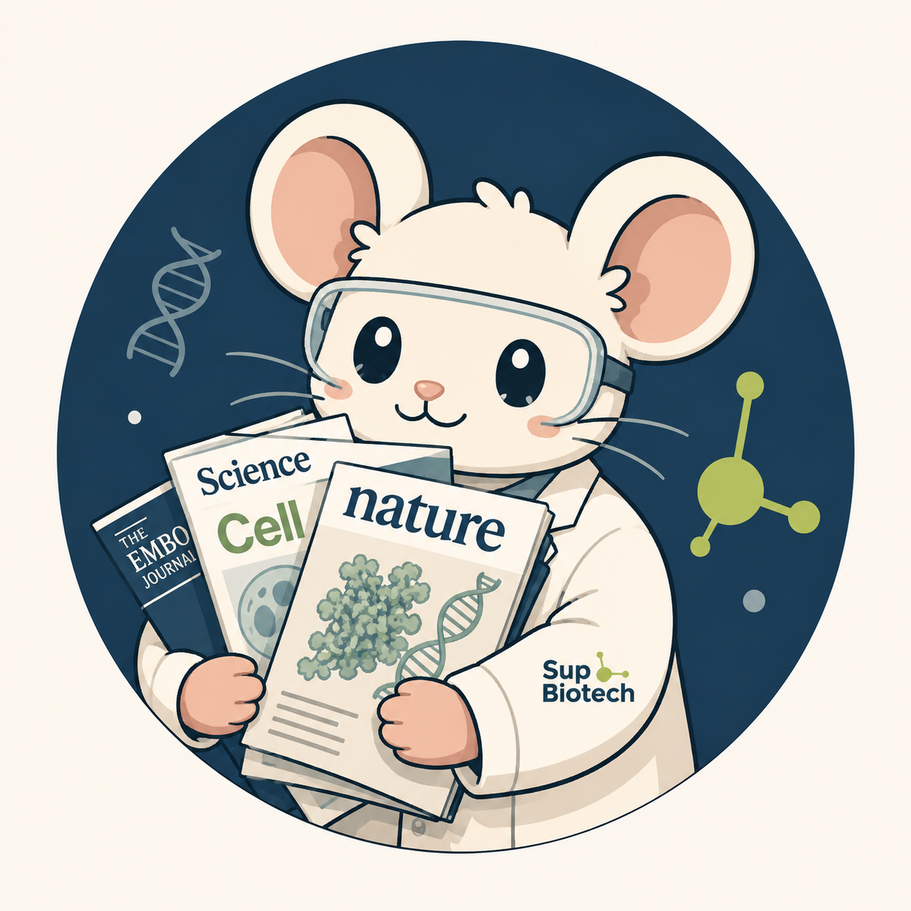
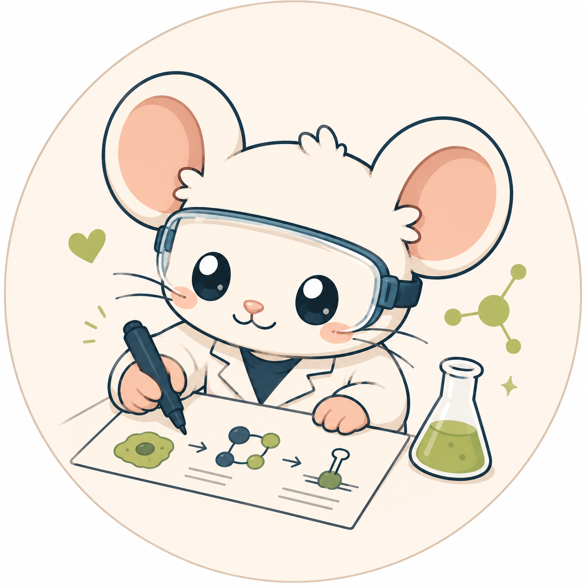
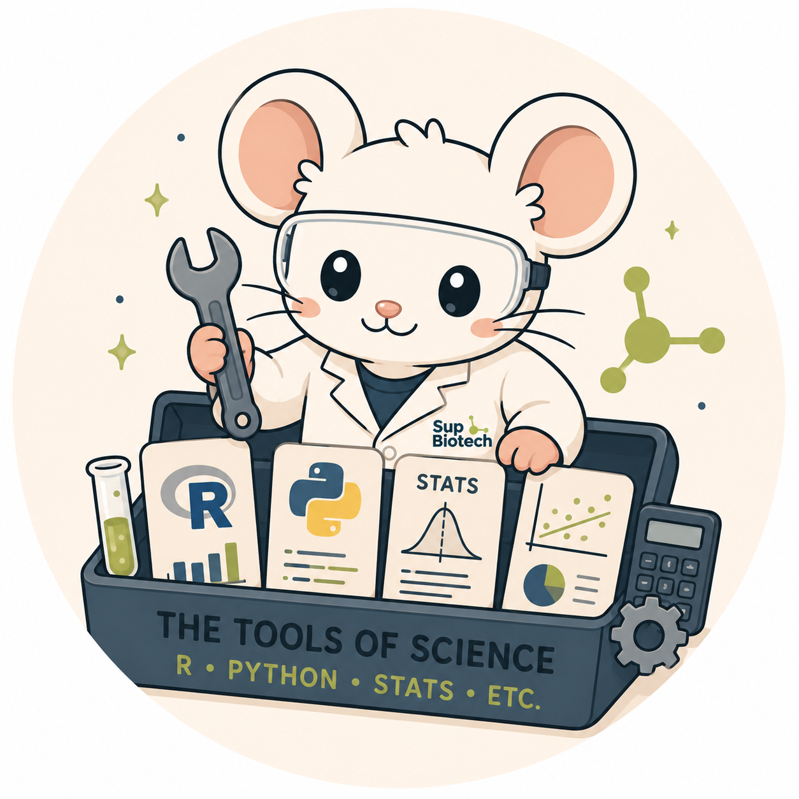
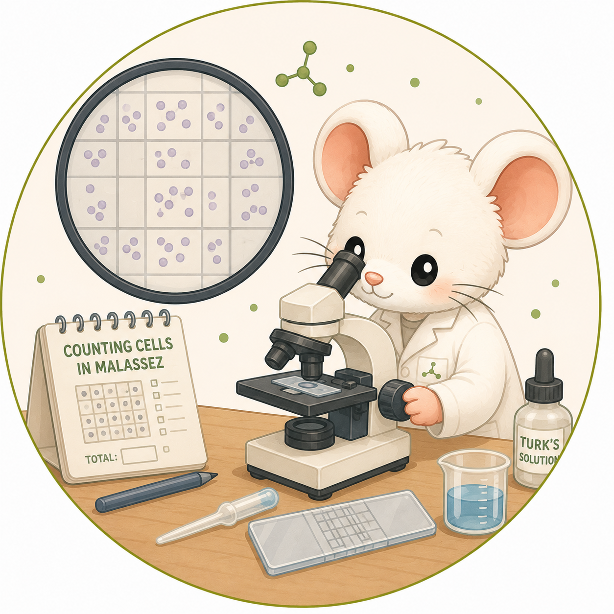
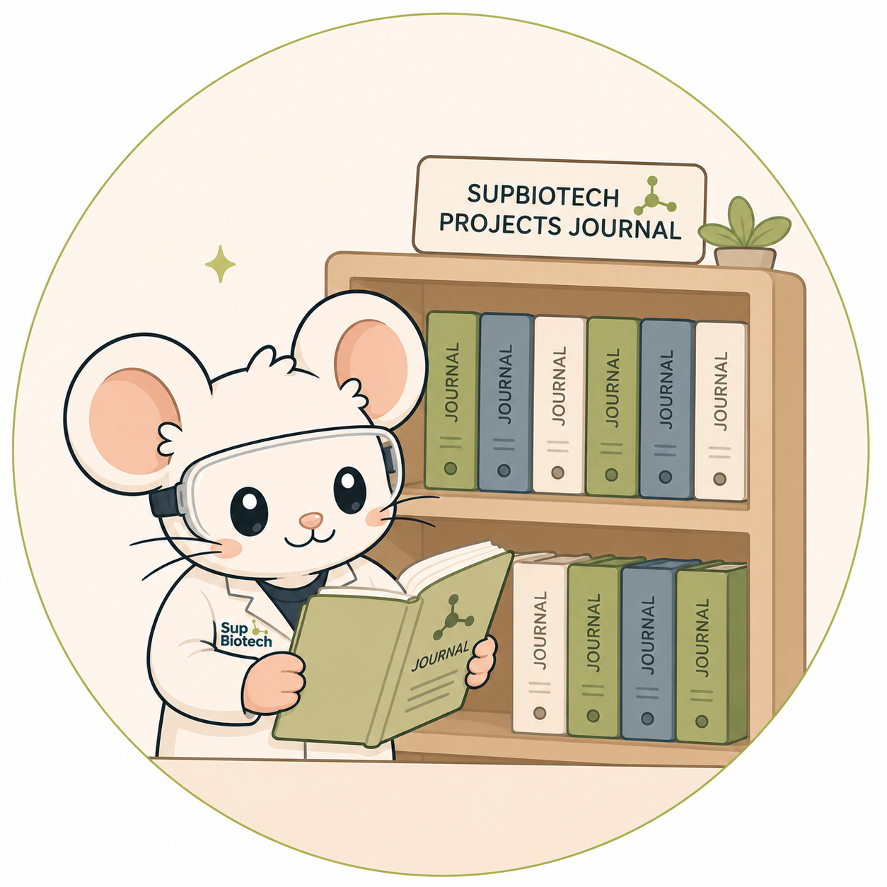
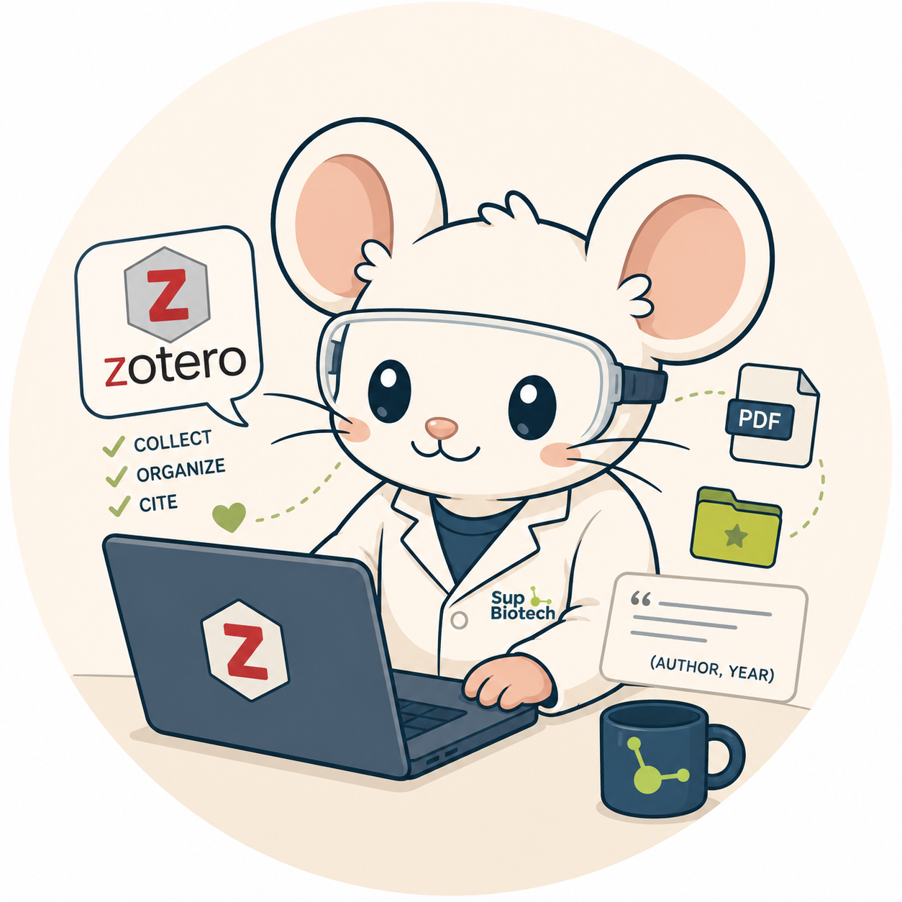
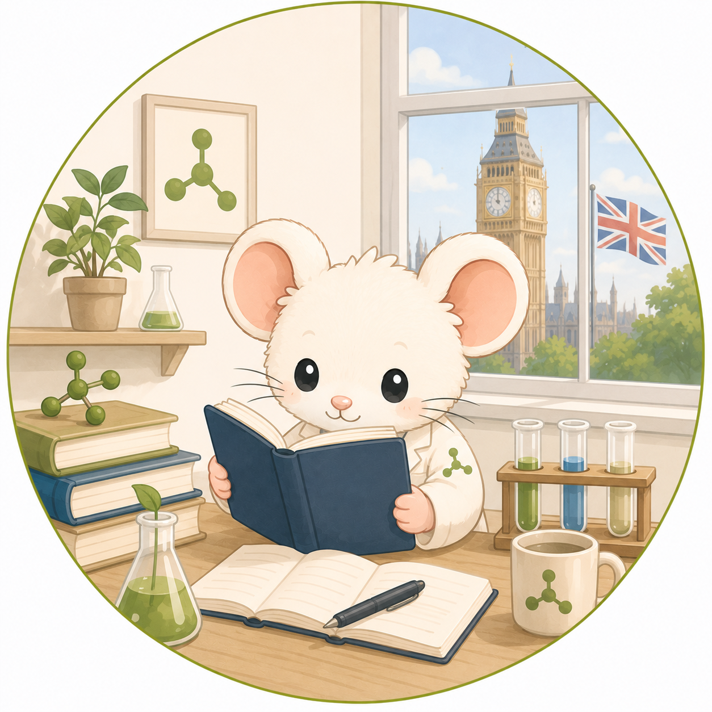
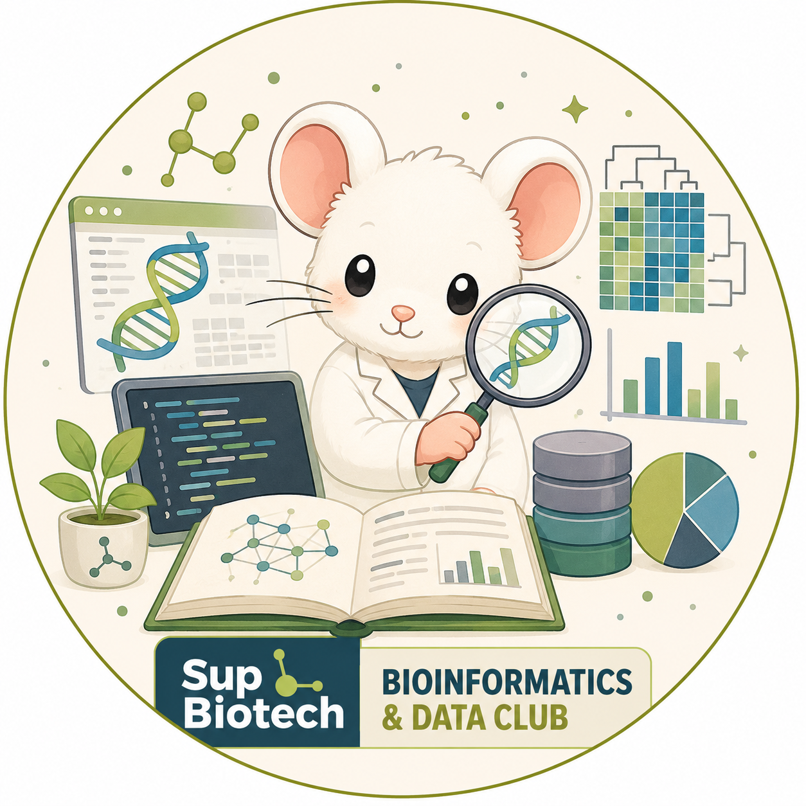
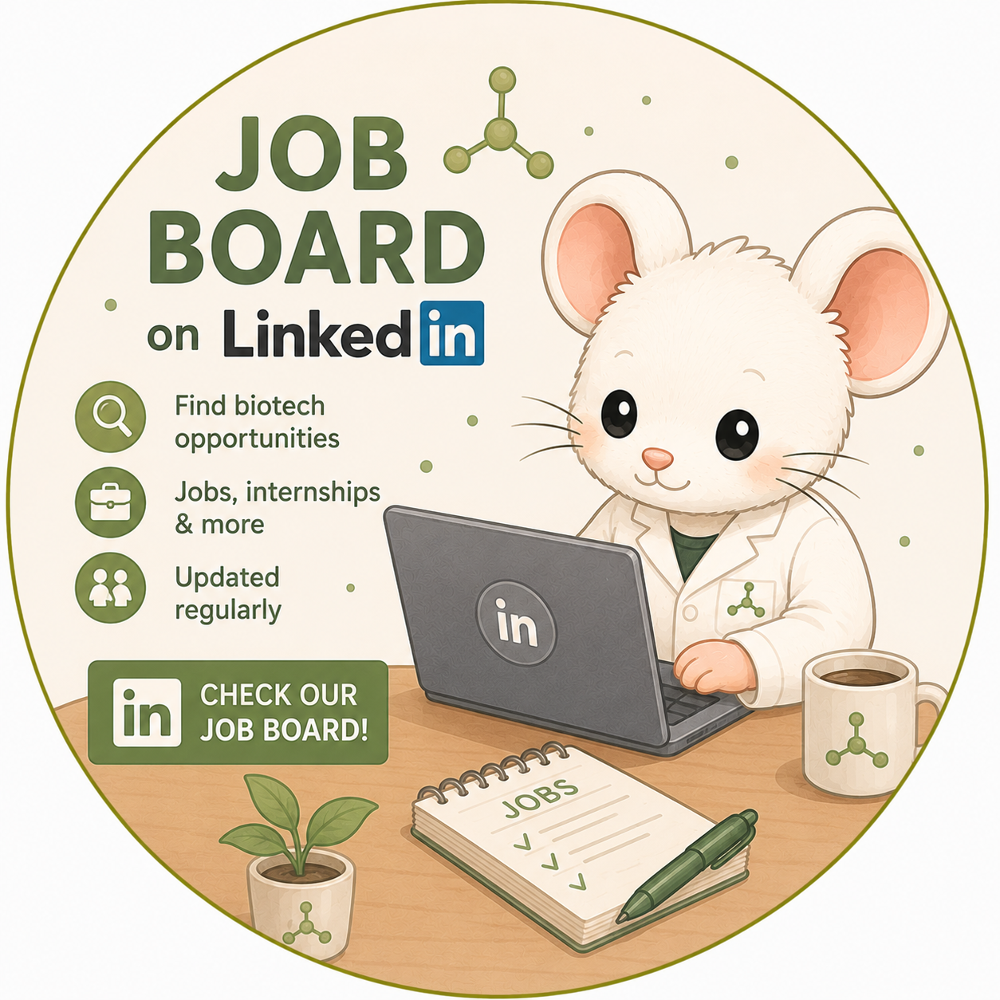
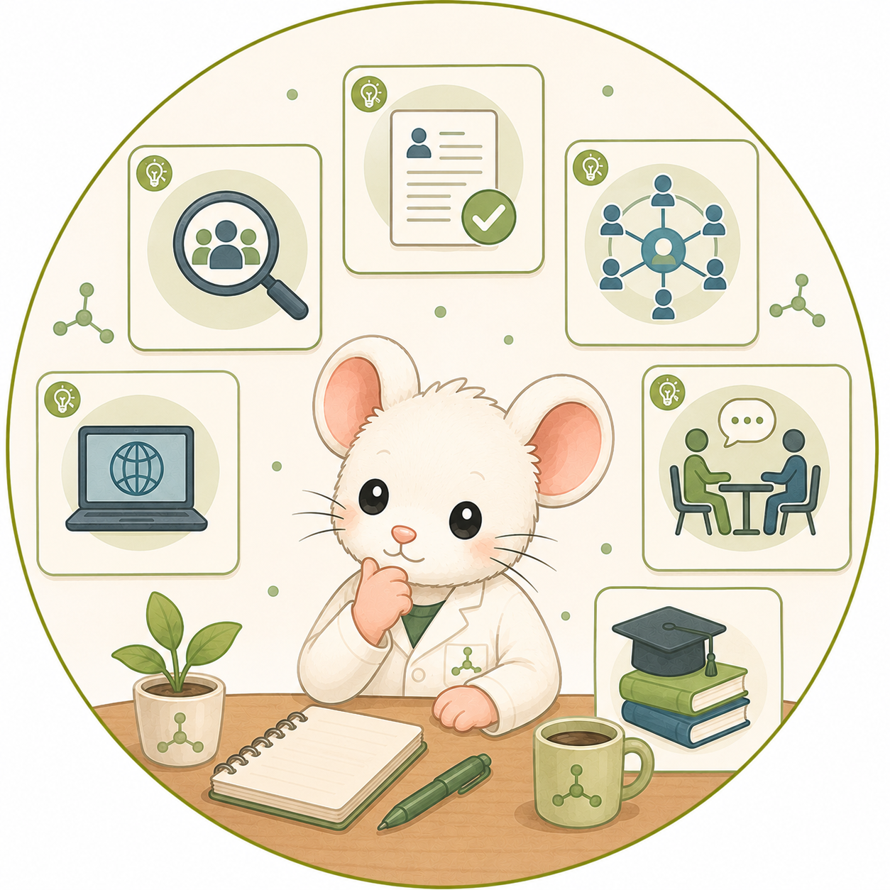

Research and Lab Tools
Recherche et outils de laboratoire

PublicationsAccess to publications
Accès aux publications
Access paid scientific journals and useful scientific resources.
Accédez aux revues scientifiques payantes et à des ressources utiles.

FiguresMaking scientific illustrations
Créer des illustrations scientifiques
Tools to create scientific illustrations, diagrams and graphical abstracts.
Outils pour créer des illustrations scientifiques, schémas et graphical abstracts.

Science toolsThe tools you need to work in science
Les outils nécessaires pour travailler en science
Essential tools for research, biotechnology and laboratory work.
Outils essentiels pour la recherche, les biotechnologies et le laboratoire.

PracticePractice counting cells on a Malassez chamber
S’entraîner à compter des cellules sur Malassez
Interactive exercise to practice cell counting.
Exercice interactif pour s’entraîner au comptage cellulaire.
Student Journal and References
Journal étudiant et références

Student journalSupBiotech Projects
The journal of SupBiotech students.
Le journal des étudiants de SupBiotech.

BibliographyZotero tutorial
Tutoriel Zotero
Learn how to manage bibliographical references with Zotero.
Apprenez à gérer vos références bibliographiques avec Zotero.

EnglishUsing English in science
Utiliser l’anglais en science
Exercises, podcasts, videos and scientific English resources.
Exercices, podcasts, vidéos et ressources d’anglais scientifique.
News and Jobs
Actualités et emplois

NewsInteresting news
Actualités intéressantes
Follow research and biotechnology news from SupBiotech Research Labs.
Suivez les actualités de recherche et de biotechnologie des laboratoires SupBiotech.

JobsJobs
Emplois
Find job and internship opportunities in biotechnology.
Trouvez des offres d’emploi et de stage en biotechnologie.

Career adviceAdvice to find internships and jobs in biotech
Conseils pour trouver un stage ou un emploi en biotech
Practical advice to prepare applications and find opportunities.
Conseils pratiques pour préparer ses candidatures et trouver des opportunités.